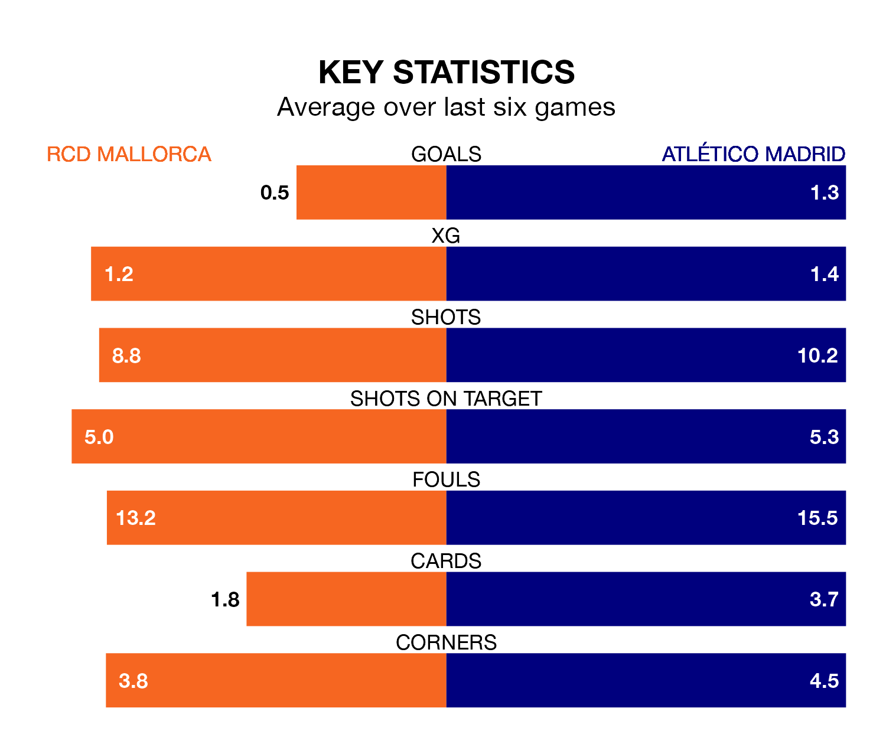

Atlético Madrid travel to RCD Mallorca on late Saturday in La Liga.
The visitors come into the game on the back of a win in their last match, having beaten Athletic Club Bilbao 3-1 at home, with goals from Unai Simón, Rodrigo De Paul and Ángel Correa.
Mallorca, meanwhile, drew their last match, 1-1 against Cádiz, with their goal scored by Vedat Muriqi.
With 62 goals in 33 games so far this season, Atlético are scoring more than average in the league with 1.9 goals per game. And they are conceding fewer than average, letting in 39 goals at a rate of 1.2 per game.
Mallorca, meanwhile, are below average scorers, with 0.8 goals per game, compared to a league average of 1.3. They have conceded 1.2 goals per game.
In the last 10 years, Mallorca and Atlético have played each other on seven occasions. Mallorca won three of them and Atlético four.
On average, Mallorca scored 0.7 goals and Atlético 1.4 in those matches.
Their last meeting was on November 25, when Atlético won 1-0 at home.
The visitors are fourth in the table after 33 games, of which they have won 20 and drawn four, earning 64 points.
The home team are 12 places behind Atlético in 16th, with six wins and 14 draws putting them on 32 points.
Mallorca are in disappointing form in La Liga, with one win and two draws from their last six games.
With three wins and three losses over that period, Atlético's form is better – they have taken nine points from 18, compared to Mallorca's five.
In Alvaro Morata, the away side have one of the league's most on-form strikers so far this season. He has notched 14 goals in 28 appearances, to sit seventh in the scoring charts.
The hosts' top scorers, with six goals each, are Abdón Prats and Muriqi.
Updated: 10:44 (UTC), 30/04/24